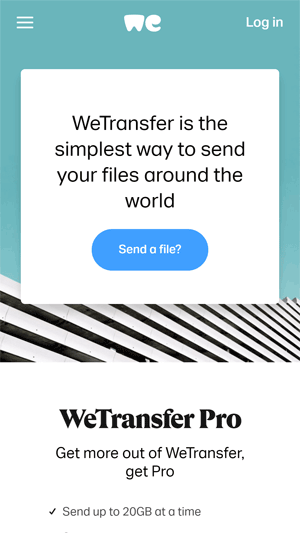
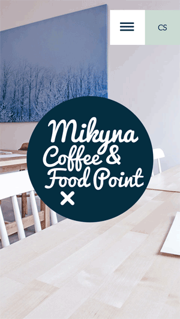

Hick's Law
WeTransfer
Hick's Law, in a nutshell, says that the time it takes to make a decision increases as the number of options increases. This makes sense as a general rule, think of the last time you went to a restaurant which had a full menu and they asked if you were ready to order, you probably needed some more time, right? WeTransfer has used this design rule to their advantage. When you get there, you immediately see their main option (which is to transfer a file). Next you see two other options, one to go "Pro", the next to get the Collect app. That is pretty much it, unless you open the menu. Wonderfully executed, with little need for thought. I mean, who has time for unnecessary options in this day and age?
Fitt's Law
Netflix
Fitt's Law, summarized, says that the amount of time it takes for a person to move a pointer/mouse cursor to the target area, and the size of said target area, determines the time it takes to click it. Basically, the longer the distance to and the smaller the target area, the longer it takes or the harder it is to click. I could have used WeTransfer here as well; see that large, single, centered "Send a file" button? That is right in the path the mobile user will take while browsing, and it has no other buttons in the way making it easy to click. However, another company that uses this tool quite well is Netflix. Their "Get Started" button is large and right at the top where you would start browsing, making it easy to "Get Started".
White Space
...and Clean Design
Mikyna Point Restaurant
For web design, white space (sometimes known as negative space) is the space between images, text and other content/elements on the website. Clean design uses white space correctly to make the most important things stand out and to minimize distractions. People are drawn to this, especially since we are now online a lot more than in previous years. We seek simplicity, and the combination of these three tools will result in success! I came across this lovely website with great use of white space and clean design, it was designed for the Mikyna Point Restaurant in the Czech Republic. Each section has its own space, navigating it is a pleasure with minimal distractions. Each page or section gives you only the information you require. Beautiful!